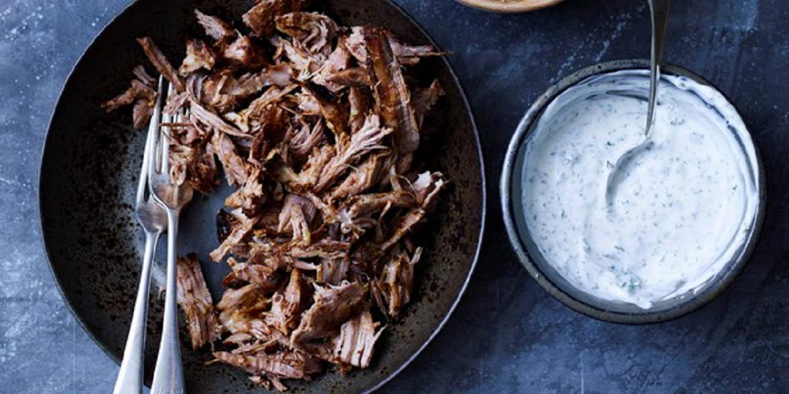

Pulled Lamb
Recipe Specification
Ingredients List
| Ingredients | Quantity |
|---|---|
| Vegetable Oil | 60ml |
| Shoulder of Lamb | 1.7kg |
| Fresh Thyme | 30g |
| Rosemary | 1 Sprig |
| Lemon | 1x1 |
| Garlic Cloves | 4 Cloves |
| Paprika | 15g |
| Cumin Seeds | 15g |
| Caraway Seeds | 1 tsp |
| Maldon Sea Salt | 1 tsp |
| Cracked Black Pepper | 1 tsp |
Yield: 10-12 portions
Preparation
- Peel and crush garlic cloves.
- Put garlic, cumin seeds, caraway seeds, paprika, Maldon sea salt and pepper in a pestle and mortar before grinding to a coarse paste.
- Pick and finely chop thyme leaves.
- Pick and finely chop rosemary leaves.
- Zest and juice lemon.
- Add lemon juice, lemon zest, rosemary and thyme to ingredients in pestle and mortar before mixing with vegetable oil.
- Rub Lamb shoulder with paste and place on top of elevated wrack. Place elevated wrack in roasting tin and add 200ml of water to tin.
- Cover shoulder and tin with 2 layers of foil ensuring edges of foil are tightly wrapped around tin.
- Pre-heat oven to 160’C.
Cooking Instructions
- Place roasting tin in the oven for 3-4 hours until meat is tender and pulling apart.
- Remove foil, empty juices from the bottom of the roasting tin and set aside. Turn oven to 200’C and roast for a further 30 minutes to give the skin some colour.
- Remove from oven and use 2 forks to pull meat apart. Discard bone, add juices and season to taste before serving.

Serving Suggestions
Pulled lamb can be served in a bap, in a wrap or in a pitta bread.
Storing instructions
Allow pulled lamb to cool to room temperature before putting in an air-tight container and placing in the refrigerator. Consume within 4 days of making it
Reheating Instructions
Place in the microwave for 2-3 minutes until piping hot.